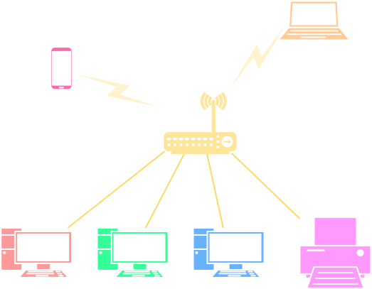

Mạng máy tính¶
Tóm lược nội dung
Bài này trình bày:
- Khái niệm về mạng cục bộ và mạng diện rộng.
- Những điểm khác nhau giữa mạng cục bộ và Internet.
- Vai trò của Internet đối với xã hội.
Mạng cục bộ¶
Khái niệm¶
Mạng cục bộ là mạng gồm các máy tính và thiết bị kết nối với nhau trong phạm vi địa lý giới hạn, chẳng hạn như trong nội bộ gia đình, cơ quan, trường học, một tòa nhà hoặc một nhóm các tòa nhà cạnh nhau.
Thiết bị¶
Ngoài máy tính, các thiết bị trong mạng cục bộ còn có:
- Bộ chuyển mạch
- Bộ định tuyến
- Máy in
- Thiết bị lưu trữ NAS
- v.v...
Cấu trúc liên kết mạng
Các máy tính và thiết bị trong mạng có thể được sắp đặt theo nhiều dạng cấu trúc khác nhau như:
- Dạng đường thẳng
- Dạng hình sao
- Dạng vòng
- Dạng lưới
Phương tiện truyền dẫn¶
Phương tiện dùng để kết nối có thể là cáp Ethernet hoặc các loại sóng vô tuyến, điển hình là WiFi.
Hình dưới đây minh hoạ một mạng cục bộ có cấu trúc hình sao, sử dụng bộ định tuyến để kết nối các máy tính để bàn và máy in bằng cáp Ethernet, kết nối các thiết bị khác bằng sóng WiFi. Bộ định tuyến này vừa cho phép tạo mạng cục bộ, vừa cho phép các thiết bị cục bộ kết nối ra mạng ngoài, chẳng hạn ra Internet.

Minh hoạ mạng cục bộ
{kind=link}
Lợi ích¶
Mạng cục bộ là do một cá nhân hoặc một tổ chức sở hữu và điều hành, cho nên người ngoài không thể truy cập vào.
Người ta thường dùng mạng cục bộ để:
- chia sẻ tập tin, thư mục
- dùng chung máy in và những thiết bị khác
- chia sẻ kết nối ra mạng Internet
Mạng diện rộng và Internet¶
Khái niệm¶
Mạng diện rộng là loại mạng phủ được một vùng địa lý rộng lớn, kết nối các mạng cục bộ và thiết bị ở khoảng cách xa, chẳng hạn như giữa các thành phố, giữa các quốc gia hoặc lục địa.
Internet là ví dụ điển hình của mạng diện rộng. Internet là mạng máy tính lớn nhất thế giới, kết nối hàng tỉ máy tính và thiết bị đa dạng của các nhà sản xuất khác nhau cùng những công nghệ khác nhau.
Hình dưới đây minh hoạ một góc nhỏ của mạng Internet1.
Minh hoạ mạng Internet
Sở hữu Internet
Mặc dù một phần nào đó của Internet có thể được quản lý bởi một công ty, một tổ chức hoặc một quốc gia, nhưng về cơ bản, Internet là công cộng mà bất kỳ ai cũng có thể truy cập vào, với những quyền nhất định nào đó.
Phương tiện truyền dẫn¶
Internet hỗ trợ nhiều hình thức kết nối với tốc độ truyền dẫn từ thấp đến cao, trong đó cáp quang là phương tiện truyền dẫn tốc độ cao và có băng thông rộng.
Sự kết nối của Internet
Internet được thiết kế hướng đến sự đảm bảo cho kết nối liên tục và tin cậy. Đó là vì, Internet sử dụng kiến trúc phân tán với nhiều tuyến di chuyển của dữ liệu và các kết nối dự phòng, đảm bảo cho dữ liệu luôn đến được đích ngay cả khi một số đường mạng bị gián đoạn.
So sánh LAN và Internet¶
| Đặc điểm | Mạng cục bộ | Mạng Internet |
|---|---|---|
| Phạm vi kết nối | Phủ được phạm vi nhỏ, giới hạn | Mở rộng ra toàn cầu |
| Phương tiện truyền dẫn | - Cáp Ethernet - Sóng WiFi |
- Cáp quang - Vệ tinh |
| Quy mô | Số lượng máy tính và thiết bị giới hạn. Khả năng mở rộng cũng giới hạn. | Quy mô lớn hơn nhiều và có thể mở rộng, cho phép gia tăng số lượng máy tính và thiết bị kết nối vào. |
| Sở hữu | Thuộc sở hữu một cá nhân, một tổ chức. | Không thuộc sở hữu của bất kỳ ai. |
| Khả năng truy cập | Chỉ những người trong cùng tổ chức mới được truy cập. | Bất kỳ ai cũng có thể truy cập. |
| Quản lý | Được quản lý bởi chủ sở hữu | Được quản lý bởi các thực thể khác nhau, bao gồm các nhà cung cấp dịch vụ Internet, các tổ chức, các quốc gia. |
| Ứng dụng | Chủ yếu để chia sẻ dữ liệu nội bộ, dùng chung máy in, chia sẻ kết nối ra Internet. | Dùng để truy cập các website, các dịch vụ trực tuyến, giao tiếp với nhau với khoảng cách xa. |
| Bảo mật | Thường dễ bảo mật hơn. | Thách thức về bảo mật là lớn hơn do tính mở và khả năng truy cập trên toàn cầu. |
Vai trò của Internet đối với xã hội¶
Internet là phát minh mang tính cách mạng, có tác động sâu sắc đến xã hội bằng việc làm thay đổi cách con người sống, làm việc và tương tác với nhau.
Một số lợi ích chủ yếu của Internet là:
-
Kết nối và giao tiếp
Internet cho phép con người kết nối ngay tức thì bằng các nền tảng như thư điện tử, tin nhắn, hội thoại video và mạng xã hội.
Internet cho phép kết nối toàn cầu, giúp xóa nhòa khoảng cách địa lý và văn hóa.
-
Truy cập thông tin và chia sẻ kiến thức
Internet cung cấp khả năng truy cập dễ dàng đến các nguồn tài nguyên thông tin, nghiên cứu và giáo dục khổng lồ.
Internet tạo điều kiện chia sẻ và phổ biến kiến thức ở quy mô toàn cầu. Từ đó khuyến khích mô hình và triết lý truy cập mở (1), thúc đẩy nhận thức và thúc đẩy sự minh bạch.
- Truy cập mở là khả năng tiếp cận toàn văn của ẩn phẩm mà không có các rào cản truyền thống, rào cản luật định và rào cản tài chính và các rào cản khác.
-
Làm việc từ xa và trao đổi từ xa
Internet hỗ trợ khả năng làm việc từ xa, làm việc cộng tác theo thời gian thực, dẫn đến việc giảm nhu cầu di chuyển vật lý, góp phần làm giảm tắc nghẽn giao thông và ô nhiễm.
Internet tạo điều kiện phát triển chính phủ điện tử, thương mại điện tử, đào tạo từ xa, e-learning, theo dõi và chẩn đoán y tế từ xa, chăm sóc sức khỏe từ xa, v.v...
-
Tăng trưởng kinh tế
Internet hỗ trợ khả năng kinh doanh trực tuyến và dịch vụ điện tử, từ đó góp phần tạo ra các mô hình kinh doanh mới.
Internet cũng góp phần tạo ra các mô hình giải trí mới, chẳng hạn như các dịch vụ streaming đối với game, âm nhạc, phim ảnh.
-
Phát triển con người và xã hội
Con người không những có thêm cơ hội học tập mà còn có thể tham gia vào các hoạt động đội nhóm, đoàn thể và xã hội, góp phần thúc đẩy gắn kết, kết nối của cộng đồng và thúc đẩy sự phát triển của toàn xã hội.
Thách thức từ Internet
Song hành với những lợi ích trên, Internet cũng tạo ra những thách thức lớn như:
- Quyền riêng tư
- An ninh và an toàn thông tin
-
Khoảng cách số (1)
- Khoảng cách số là sự chênh lệch trong việc tiếp cận và sử dụng công nghệ số giữa các cá nhân, cộng đồng hoặc lãnh thổ. Sự chênh lệch này bắt nguồn từ sự bất bình đẳng về khả năng tiếp cận công nghệ, hiểu biết kỹ thuật số và khả năng tận dụng hiệu quả các nguồn tài nguyên số.
Sơ đồ tóm tắt nội dung¶
Sơ đồ khái quát phân loại mạng máy tính
Some English words¶
| Vietnamese | Tiếng Anh |
|---|---|
| bộ chuyển mạch | switch |
| bộ định tuyến | router |
| cáp Ethernet | Ethernet cable |
| cáp quang | fiber optic cable |
| chia sẻ, dùng chung | share |
| dịch vụ trực tuyến | online service |
| kết nối | connect |
| kết nối có dây (chẳng hạn cáp Ethernet) | wired connection |
| kết nối không dây (WiFi, bluetooth, NFC) | wireless connection |
| mạng cục bộ | local area network (LAN) |
| mạng diện rộng | wide area network (WAN) |
| nhà cung cấp dịch vụ Internet | Internet Service Provider (ISP) |
-
Hình được lấy từ drawio.com. ↩